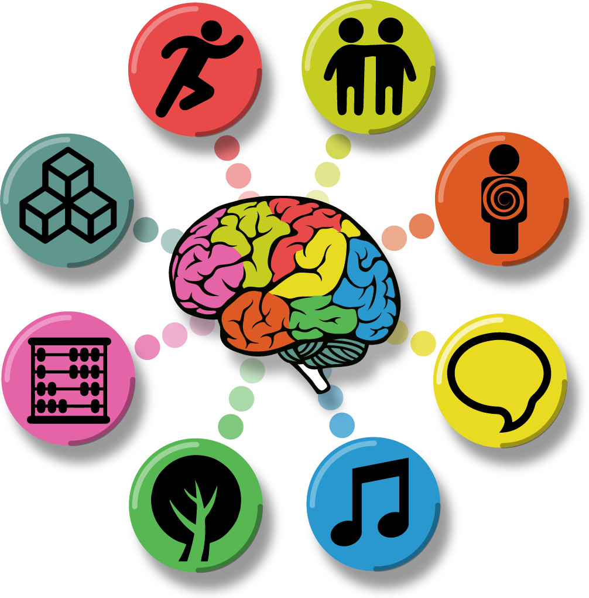
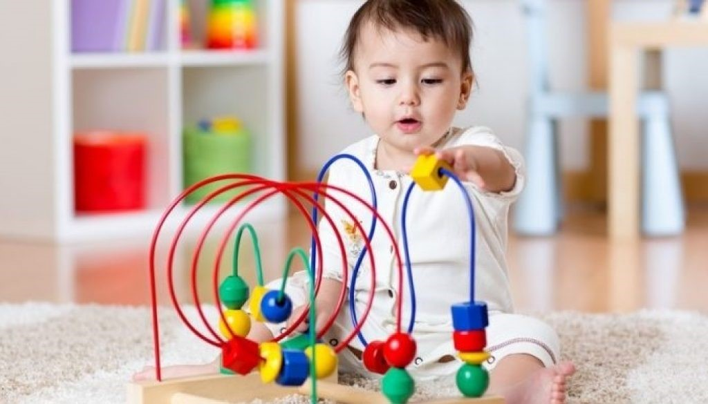

HABILIDADES COGNITIVAS SUPERIORES
Las habilidades cognitivas superiores son aquellas funciones mentales avanzadas que permiten a los seres humanos procesar, interpretar y transformar la información de manera consciente, estratégica y abstracta. Estas capacidades no solo implican el uso de habilidades básicas como recordar, reconocer o percibir, sino que también abarcan procesos de alto nivel que involucran la reflexión, el análisis profundo, la toma de decisiones informadas y la capacidad de autorregular el pensamiento y el aprendizaje. Se consideran "superiores" porque representan un nivel más elevado de procesamiento mental en comparación con las habilidades cognitivas básicas, como la percepción o la memoria simple.

Estas habilidades son fundamentales para tareas complejas que requieren planificación, creatividad, resolución de problemas y evaluación crítica. Permiten a los individuos enfrentarse a desafíos novedosos, adaptarse a contextos cambiantes y generar soluciones innovadoras. Además, están íntimamente relacionadas con el desarrollo de la inteligencia emocional y social, ya que facilitan la comprensión de las emociones propias y ajenas, así como la interacción efectiva en diferentes entornos.
Características clave de las habilidades cognitivas superiores
1. Razonamiento abstracto y lógico: Esta habilidad permite comprender conceptos que no están directamente relacionados con experiencias concretas. Involucra el uso del pensamiento lógico, la identificación de patrones y la generalización de principios aplicables a diversas situaciones.
2. Pensamiento crítico: Es la capacidad de analizar información de manera objetiva y fundamentada, evaluando la validez de los argumentos y diferenciando hechos de opiniones. El pensamiento crítico incluye habilidades como la inferencia, la deducción y la evaluación de evidencias.
3. Resolución de problemas: Esta habilidad permite identificar problemas, comprender sus causas y consecuencias, generar posibles soluciones, evaluarlas y seleccionar la más adecuada. Es esencial para la toma de decisiones efectivas en situaciones complejas.
4. Creatividad: La creatividad es la capacidad de generar ideas originales, innovadoras y útiles. Involucra la habilidad para pensar fuera de los esquemas convencionales, asociar ideas aparentemente no relacionadas y proponer alternativas novedosas.
5. Planificación y organización: Consiste en la capacidad de establecer metas, priorizar tareas, gestionar el tiempo y los recursos de manera eficiente. Esta habilidad es crucial para llevar a cabo proyectos de largo plazo y alcanzar objetivos personales o profesionales.
6. Metacognición: Esta habilidad implica la conciencia y el control sobre los propios procesos de pensamiento. Incluye la capacidad de reflexionar sobre cómo se aprende, identificar fortalezas y debilidades en el razonamiento y ajustar las estrategias cognitivas para mejorar el desempeño.
7. Flexibilidad cognitiva: Es la capacidad de adaptarse a nuevos contextos, cambiar de perspectiva y modificar estrategias cuando las circunstancias lo requieren. Esta habilidad es especialmente valiosa en entornos dinámicos y cambiantes.
8. Toma de decisiones informada: Requiere la evaluación de múltiples opciones, considerando tanto la información disponible como las posibles consecuencias. Implica sopesar riesgos y beneficios antes de elegir un curso de acción.
Importancia de las habilidades cognitivas superiores

Estas habilidades son esenciales en el desarrollo personal y profesional, ya que permiten a los individuos abordar situaciones complejas, resolver conflictos, innovar y adaptarse a un mundo en constante cambio. Además, son fundamentales en el ámbito académico, donde fomentan el aprendizaje profundo, la capacidad de investigar y el pensamiento autónomo.
El desarrollo de estas habilidades se puede potenciar mediante el aprendizaje continuo, la exposición a retos intelectuales y el entrenamiento en técnicas de autorreflexión y pensamiento crítico. En resumen, las habilidades cognitivas superiores constituyen la base para el desempeño efectivo y exitoso en una amplia gama de actividades humanas, desde la resolución de problemas cotidianos hasta la gestión de proyectos ambiciosos y la toma de decisiones estratégicas en contextos complejos.
Las habilidades cognitivas superiores pueden dividirse en diversas categorías según los procesos mentales que abarcan. Estas divisiones permiten entender mejor cómo funcionan y cómo se aplican en diferentes contextos. A continuación, se presentan las principales áreas de división:
Las habilidades cognitivas superiores pueden dividirse en diversas categorías según los procesos mentales que abarcan. Estas divisiones permiten entender mejor cómo funcionan y cómo se aplican en diferentes contextos. A continuación, se presentan las principales áreas de división:
1. Procesos de pensamiento crítico y lógico
Aquí tienes una descripción ampliada y detallada de las divisiones de las habilidades cognitivas superiores, con explicaciones extensas para cada una:
1. Procesos de pensamiento crítico y lógico
El pensamiento crítico y lógico constituye un conjunto de habilidades que permiten analizar información de manera profunda, estructurada y objetiva. Estas habilidades implican la capacidad de evaluar argumentos, identificar falacias o errores lógicos, y establecer conexiones entre ideas aparentemente independientes.
El pensamiento lógico es esencial para inferir conclusiones válidas basadas en premisas y utilizar razonamientos inductivos o deductivos según el contexto. Por su parte, el pensamiento crítico requiere cuestionar la información recibida, discernir entre hechos y opiniones, y evaluar la validez y la fiabilidad de las fuentes.
Estas habilidades son fundamentales en la toma de decisiones complejas, la resolución de problemas y el aprendizaje, ya que fomentan una comprensión más profunda y una aplicación reflexiva del conocimiento adquirido.
2. Habilidades de resolución de problemas
La resolución de problemas es un proceso sistemático que permite abordar desafíos de manera eficiente y efectiva. Implica identificar la naturaleza del problema, analizar sus causas y consecuencias, generar posibles soluciones, evaluarlas y seleccionar la más adecuada para su implementación.
Este conjunto de habilidades incluye competencias específicas como el pensamiento analítico, que ayuda a descomponer problemas complejos en partes más manejables; el pensamiento creativo, que genera ideas innovadoras para soluciones únicas; y la capacidad de evaluar las alternativas en función de su viabilidad y posibles impactos.
La resolución de problemas no solo es clave en contextos académicos y laborales, sino también en la vida cotidiana, ya que ayuda a enfrentar situaciones imprevistas o conflictos interpersonales de manera constructiva.
3. Procesos de autorregulación y metacognición
La autorregulación y la metacognición son habilidades interrelacionadas que permiten a los individuos reflexionar sobre su propio pensamiento y aprendizaje, así como ajustar sus estrategias para lograr mejores resultados. La metacognición implica ser consciente de cómo piensas, comprendes y resuelves problemas, mientras que la autorregulación se enfoca en gestionar activamente el propio comportamiento, emociones y procesos cognitivos para alcanzar objetivos específicos.
Estas habilidades incluyen establecer metas claras, planificar las acciones necesarias, monitorear el progreso hacia los objetivos y evaluar los resultados obtenidos. Además, fomentan la capacidad de identificar fortalezas y debilidades personales y ajustar estrategias en consecuencia.
La metacognición y la autorregulación son esenciales para el aprendizaje autónomo, ya que permiten a los individuos adaptarse a nuevos desafíos y mejorar continuamente sus competencias.
4. Habilidades creativas
La creatividad es la capacidad de generar ideas, soluciones o productos que sean originales, innovadores y útiles. Es una habilidad multifacética que combina el pensamiento divergente, que se centra en explorar múltiples posibilidades, con el pensamiento convergente, que selecciona las mejores opciones basándose en criterios específicos.
Las habilidades creativas incluyen la capacidad de asociar ideas aparentemente no relacionadas, reformular problemas para encontrar nuevas perspectivas y combinar conocimientos de diferentes áreas para generar soluciones innovadoras. La creatividad no solo se limita al arte o la expresión personal, sino que también desempeña un papel esencial en la ciencia, la tecnología, los negocios y la resolución de problemas cotidianos.
Además, estas habilidades requieren un entorno que fomente la curiosidad, la apertura al aprendizaje y la tolerancia al error, ya que la experimentación y la flexibilidad son componentes clave de la creatividad.
5. Flexibilidad y adaptabilidad cognitiva
La flexibilidad y adaptabilidad cognitiva se refieren a la capacidad de cambiar de enfoque, perspectiva o estrategia cuando las circunstancias lo exigen. Estas habilidades son fundamentales para enfrentar entornos dinámicos y resolver problemas que no tienen soluciones predefinidas.
La flexibilidad cognitiva incluye la habilidad de considerar múltiples puntos de vista, integrar nueva información en esquemas de conocimiento existentes y modificar patrones de pensamiento establecidos para adaptarse a nuevos contextos. La adaptabilidad, por su parte, implica una disposición para aprender de las experiencias, aceptar el cambio y manejar la incertidumbre con confianza.
Estas competencias son esenciales en un mundo en constante cambio, donde la capacidad de adaptarse rápidamente a nuevas tecnologías, culturas y situaciones es clave para el éxito personal y profesional.
6. Habilidades de toma de decisiones
La toma de decisiones es un proceso complejo que involucra evaluar múltiples opciones y elegir la más adecuada en función de los objetivos y las circunstancias. Esta habilidad requiere una combinación de análisis crítico, razonamiento lógico y juicio intuitivo.
El proceso de toma de decisiones incluye identificar claramente el problema o la oportunidad, recopilar información relevante, considerar alternativas, sopesar riesgos y beneficios, y seleccionar la opción más viable. También implica reflexionar sobre las consecuencias de la decisión y ajustar futuros procesos en función de los resultados obtenidos.
Una toma de decisiones efectiva no solo se basa en habilidades cognitivas, sino también en la capacidad emocional para manejar la presión y asumir la responsabilidad de los resultados, ya sean positivos o negativos.
7. Procesos de planificación y organización
Las habilidades de planificación y organización son fundamentales para estructurar actividades, priorizar tareas y gestionar el tiempo de manera eficiente. Estas habilidades permiten establecer metas claras, dividir proyectos en pasos manejables, y coordinar recursos materiales y humanos para alcanzar objetivos específicos.
La planificación incluye prever posibles obstáculos y diseñar estrategias para superarlos, mientras que la organización asegura que las actividades se lleven a cabo de manera ordenada y coherente. Estas competencias no solo mejoran la productividad, sino que también reducen el estrés al proporcionar claridad y dirección en la ejecución de tareas complejas.
La planificación efectiva también fomenta la flexibilidad, ya que permite ajustes en caso de cambios en las circunstancias o prioridades.
8. Pensamiento estratégico
El pensamiento estratégico es una habilidad avanzada que permite a las personas anticiparse a desafíos futuros, identificar oportunidades y planificar acciones a largo plazo para lograr objetivos de alto impacto. Este proceso involucra una combinación de análisis situacional, creatividad e intuición para desarrollar estrategias sostenibles y efectivas.
El pensamiento estratégico requiere evaluar el contexto en su totalidad, considerar las posibles consecuencias de diferentes acciones, y tomar decisiones que maximicen los beneficios a largo plazo. También implica la capacidad de priorizar objetivos, gestionar recursos de manera eficiente y adaptar los planes según sea necesario para enfrentar cambios en el entorno.
Esta habilidad es especialmente valiosa en liderazgo, gestión de proyectos y toma de decisiones empresariales, donde una visión integral y proactiva es esencial para el éxito.
• Anderson, J. R. (1990). Cognitive Psychology and its Implications. Freeman.
• Flavell, J. H. (1979). "Metacognition and Cognitive Monitoring: A New Area of Cognitive-Developmental Inquiry". American Psychologist, 34(10), 906-911.
• Sternberg, R. J. (1985). Beyond IQ: A Triarchic Theory of Human Intelligence. Cambridge University Press.
• Costa, A. L., & Kallick, B. (2008). Learning and Leading with Habits of Mind: 16 Essential Characteristics for Success. Association for Supervision and Curriculum Development (ASCD).